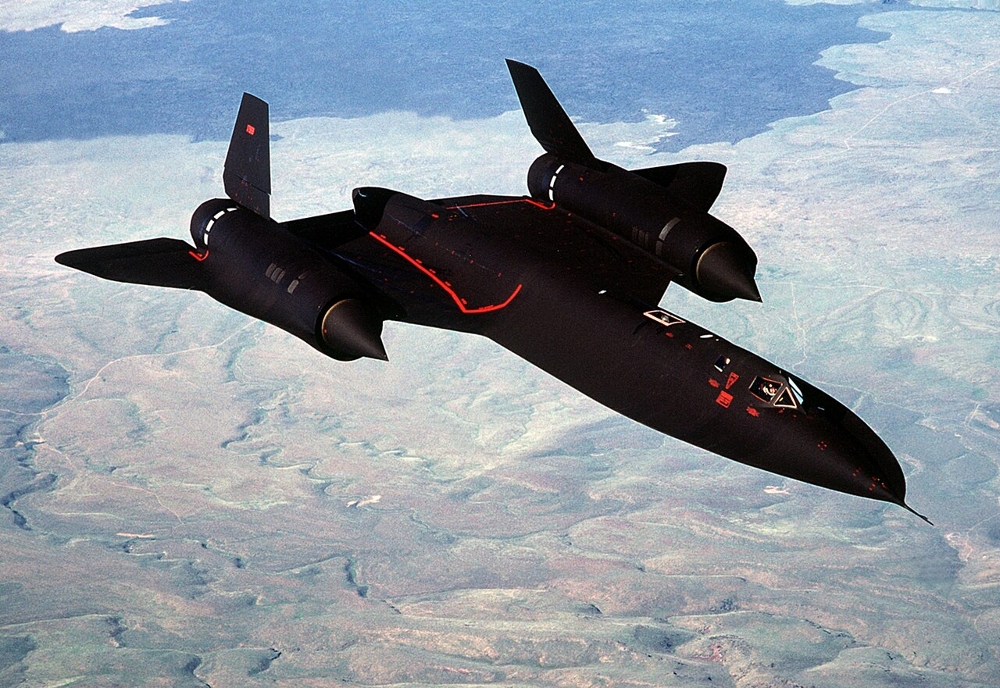
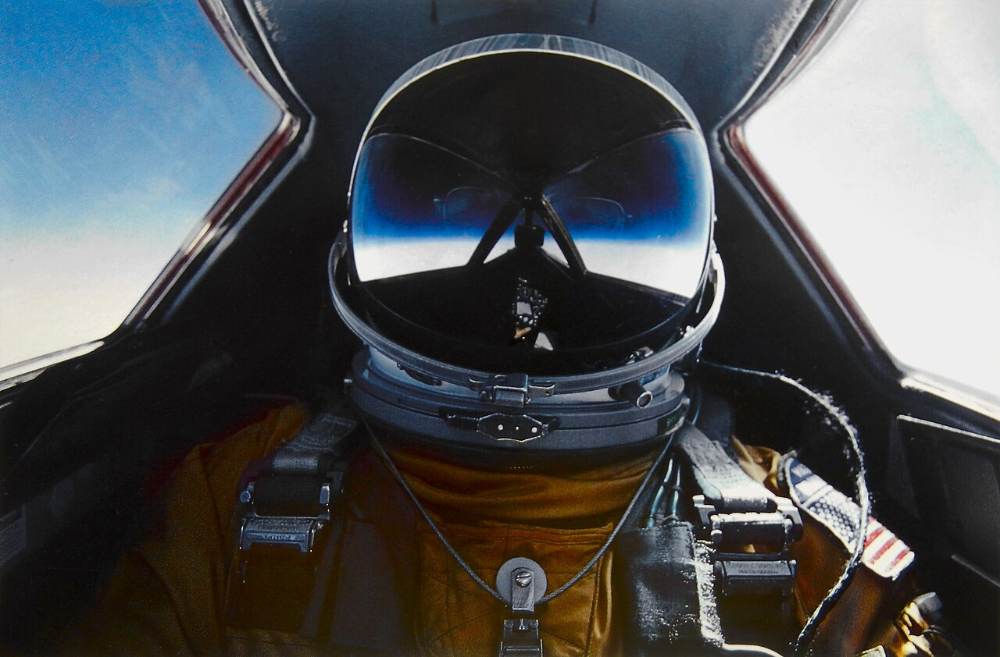

Keep Exploring
More Classified Aircraft
The SR-71 is one of fourteen classified and experimental aircraft covered in The Secret Skies archive.
No missile ever fired at an SR-71 Blackbird ever caught one. Its standard evasive maneuver against an incoming threat was simply to accelerate. Built from titanium the CIA secretly bought from the Soviet Union through shell companies — the very country the aircraft was designed to spy on — the Blackbird set a sustained speed record in 1976 that has never been officially broken by another crewed, air-breathing aircraft. It was retired in 1998, and nothing has ever officially replaced it.
Flying at Mach 3 generates enough friction heat to soften ordinary aircraft aluminum. Solving that problem meant Kelly Johnson's Skunk Works needed a metal, and a supplier, the U.S. barely had access to.
Sustained Mach 3 flight heats an aircraft's skin to several hundred degrees Fahrenheit — hot enough that conventional aluminum alloys lose structural strength. Kelly Johnson's team built the Blackbird from more than 90% titanium instead, a metal light enough to fly and tough enough to survive the heat, but one the United States didn't produce in anything close to the quantity or purity the program needed.
The largest known source of high-grade titanium ore at the time was the Soviet Union — the exact country the aircraft was being built to spy on. The CIA solved the problem by quietly buying Soviet titanium through a network of third-country shell corporations and front companies, reportedly including firms posing as ordinary industrial equipment manufacturers, routing the metal to Lockheed's Burbank plant without the Soviets ever learning its true destination.

We built America's fastest airplane out of the enemy's own metal, and they helped pay for the shipping.
— Characterization widely repeated in retellings of the CIA's Cold War titanium procurement programFlying at the edge of the atmosphere meant SR-71 crews suited up almost exactly like the astronauts flying in the same era.
SR-71 pilots and reconnaissance systems officers wore full-pressure suits nearly identical in concept to those worn by NASA's Gemini and Apollo astronauts, for the same underlying reason: at the Blackbird's operational altitude, unprotected human blood would boil at body temperature. The suit supplied breathing oxygen, maintained pressure, and protected against the extreme temperature swings between the frigid outside air and the heat radiating through the cockpit's own heated windows.
Two crew flew every mission — a pilot and a reconnaissance systems officer managing cameras, sensors and navigation — strapped into an aircraft that could cross the continental United States in roughly an hour, faster than most crews could fully process the view outside.

Over roughly three decades of operational flying, adversaries fired thousands of surface-to-air missiles at SR-71s. None ever hit one.
SR-71 crews' standard response to a detected missile launch wasn't a diving turn or evasive maneuver in the conventional fighter-pilot sense — it was simply to push the throttles forward. At Mach 3+, the aircraft could out-accelerate the missiles' own intercept solutions, rendering evasive dogfighting-style maneuvers largely unnecessary.
Despite flying reconnaissance missions over some of the most heavily defended airspace of the Cold War, no SR-71 was ever successfully shot down by enemy action — the only losses across the program's history came from accidents and mechanical failures, not combat.
No SR-71 story circulates more widely among pilots than the one about a routine air traffic control radio call — because it perfectly captures what the aircraft actually was.
As recounted by SR-71 pilot Major Brian Shul
A Cessna, a fighter jet, and a Blackbird, all on the same frequency.
In a widely retold account, pilot Major Brian Shul described a Los Angeles Center air traffic controller casually offering ground speed readouts to pilots who asked — prompting a Cessna to report 90 knots and a fighter jet to proudly report 620 knots. When the controller, almost as an aside, asked the Blackbird crew if they wanted their ground speed too, Shul's reconnaissance systems officer keyed the radio and delivered the reply pilots still quote decades later: their INS-derived ground speed for that check happened to read 1,742 knots — more than 2,000 mph, rendering the fighter pilot's earlier boast instantly, silently obsolete on the same frequency.
Los Angeles Center, Aspen 20, can you give us a ground speed readout?
— As recounted by Maj. Brian Shul in his account of the widely retold “Speed Check” storyThe Air Force retired its SR-71 fleet in 1998, officially because reconnaissance satellites had matured enough to take over the mission. The gap it left has never fully closed.
Budget politics played at least as large a role as satellite capability: the SR-71 was expensive to operate, requiring specialized fuel and extensive maintenance between every sortie, and Congress repeatedly debated its funding through the 1990s. NASA continued flying two SR-71s for high-speed research even after the Air Force's own retirement, finally ending Blackbird flight operations entirely by 1999.
No aircraft has since matched its sustained Mach 3+ speed in operational service. Rumored hypersonic successors, sometimes referred to informally as the SR-72, remain unconfirmed by the U.S. government as of this writing.
More than a quarter-century after its final flight, the Blackbird's speed record and reputation remain untouched.
The SR-71's July 1976 FAI-certified sustained speed record for a crewed, air-breathing aircraft has never been officially broken by another operational aircraft, more than fifty years later.
The Blackbird grew directly from the CIA's own A-12 Oxcart program, adapted into a larger, two-seat Air Force reconnaissance platform once the CIA-exclusive Oxcart was judged too narrow a program to sustain long-term.
Few military aircraft have generated as much enduring pilot folklore as the Blackbird — the “Speed Check” story alone has been retold in pilot briefings, books and documentaries for decades.
Surviving SR-71s are displayed at museums including the Smithsonian's Udvar-Hazy Center, the Intrepid Museum, and Beale Air Force Base — the same base its final operational squadron once called home.
The SR-71 is one of fourteen classified and experimental aircraft covered in The Secret Skies archive.
Every fact in this case file was cross-referenced against at least two independent sources. All links open in a new tab.
The Smithsonian's official collection record and history of the SR-71 program.
Detailed account of the CIA's shell-company titanium procurement program.
Official Air Force specifications, speed records and operational history.
Official CIA history covering the A-12 Oxcart program the SR-71 was directly derived from.